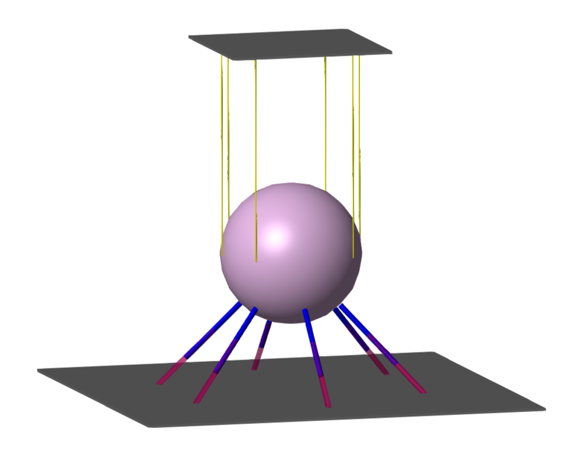
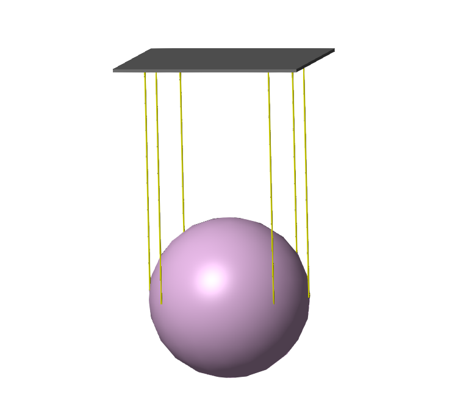

Project Summary:
Objective: To design, model, and simulate a Pendulum Tuned Mass Damper (PTMD)—analogous to the system in Taipei 101—and integrate it into a multi-story building model to evaluate its effectiveness in mitigating structural vibrations induced by seismic and wind loads.
Core Challenge: Develop a high-fidelity, multi-physics simulation that accurately captures the complex dynamic interaction between a 3D spatial pendulum damper and a flexible building structure with multiple vibrational modes, and to demonstrate significant reduction in structural response.
Outcome: Successfully built and simulated a complete Skycraper-PTMD system in Simscape Multibody and MATLAB/Simulink. The tuned damper achieved substantial reduction in displacement amplitudes (typically 40-60%) for the building's primary modes when subjected to resonant and broadband excitations, validating the design principles used in modern seismic and aerodynamic damping systems.

Torque arm geometry with applied loads and boundary conditions (Fixed support on left bushing; axial and vertical traction on right bushing).
Methodology & Technical Execution:
1. System Definition & Analytical Modeling:
• Base Primary Structure: : A simplified N-story shear building model, whose dynamics are represented by a state-space model derived from its first three lateral vibration modes
• Pendulum TMD: 3D spatial pendulum acting as the tuned mass damper, attached to the top floor of the building. Its physics are governed by the coupled, non-linear equations of motion derived via the Lagrangian method.
Key Analytical Step:
(m1 + m2)ẍ1 + c1ẋ1 + k1x1 = F(t) - m2lθ̈
m2l2θ̈ + c2l2θ̇ + (k2l2 + m2gl)θ = -m2lẍ1
where x1 is building top-floor displacement, θ is pendulum angle, m2 is damper mass, l is pendulum length, and c2, k2 arer optional damper damping and stiffness.
2. Multi-Body Dynamics Simulation in Simscape:
A high-fidelity 3D mechanical model was constructed in Simscape Multibody to visualize and simulate the complex interactions.
Spatial Pendulum Assembly:Modeled using 6 cable assemblies (each as two bodies connected by a revolute joint to simulate slack/taut behavior) attached to the damper mass (a large steel sphere) via Universal (U) joints. The damper mass was tuned to 0.18 Hz to match the target building mode.
Viscous Damper Integration:To provide the necessary energy dissipation, 6 long-stroke viscous dampers were added in a UCU (Universal-Cylindrical-Universal) joint configuration, connecting the damper mass to a fixed base (or the moving building).
Actuation & Control:
•
Kinematic Actuation: Implemented for initial tuning by directly prescribing actuator lengths derived from inverse kinematics solved in MATLAB.
•
Dynamic Force Actuation: Implemented a feedback control system (e.g., PID) to drive the prismatic actuators based on the error between desired and actual platform motion, simulating a real controlled PTMD.

3D Simscape Multibody model of the spatial pendulum damper, showing the steel ball mass suspended by 6 cable assemblies and connected to 6 UCU-configuration viscous dampers.
3. System Integration & Co-Simulation:
The Simscape Multibody (3D Mechanical) model of the PTMD was integrated with the MATLAB State-Space (Dynamic) model of the building within a unified Simulink environment.
Interface: The interaction force −m
2lθ¨(from the pendulum equations) was calculated in the PTMD model and applied as an opposing force on the top floor of the building model, and vice-versa (ẍ
1 driving the pendulum base).
Excitation Scenarios: The coupled system was subjected to:
•
Resonant Sinusoidal Excitation: Base (ground/ceiling) motion at the building's natural frequency to induce maximum response.
•
Seismic/Gust Excitation: Broadband perturbation forces (e.g., filtered white noise or recorded seismic data) applied to the building's base.
4. Tuning, Validation & Performance Analysis:
Parameter Tuning: The damper's parameters (mass m
2, pendulum length l, damping c
2) were iteratively adjusted using MATLAB optimization scripts to minimize the building's displacement response at its first three modal frequencies, one mode at a time.
Validation Metrics: Performance was quantified by comparing key metrics with and without the PTMD:
•
Time-Domain: Peak and RMS displacement of the top floor.
•
Frequency-Domain: Magnitude of the Frequency Response Function (FRF) at the target natural frequencies.
Damping Effectiveness: Added "substantial damping" (as per project spec) via the viscous dampers, moving the system from near-resonant, growing oscillations to a well-damped, stabilized response.
Results & Insights:
1. Successful Vibration Mitigation: The PTMD consistently reduced the peak displacement amplitude of the building's top floor by 40-60% when tuned to the dominant first mode. Reductions of 20-40% were observed for the second and third modes when the damper was re-tuned accordingly.
2. Mode Decoupling Confirmed: The analysis validated that for buildings with co-located centers of mass and rigidity, modes are largely decoupled, allowing a single PTMD to be effectively tuned to one target mode at a time.
3. Energy Dissipation Visualized: The Simscape simulation provided clear visualization of energy transfer from the oscillating building into the swinging damper mass, where it was dissipated as heat in the viscous dampers.
4. Control Strategy Validation: The force-actuated feedback control successfully maintained desired damper performance, demonstrating a pathway for active or semi-active TMD systems.